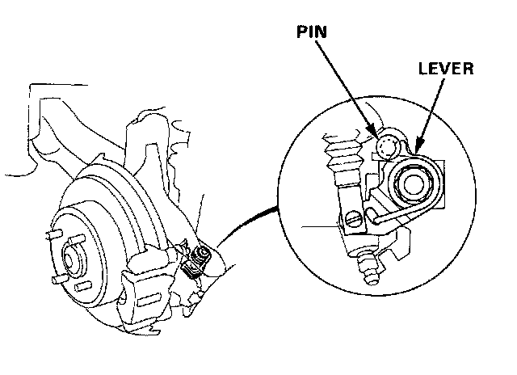

Parking Brake System: Adjustments
Parking Brake AdjustmentNOTE: After rear brake caliper servicing, loosen the parking brake adjusting nut, start the engine and depress the brake pedal several times to set the self-adjusting brakes before adjusting the brake pedal.
Warning: Block the front wheels before jacking up the rear of the car.
1. Raise the rear wheels off the ground.

2. Make sure the lever of the rear brake caliper contacts the brake caliper pin.
3. Pull the parking brake lever up one notch.
4. Tighten the adjusting nut until the rear wheels drag slightly when turned.
5. Release the parking lever and check that the rear wheels do not drag when turned. Readjust if necessary.

6. With the equalizer properly adjusted, the rear brakes should be fully applied when the parking brake lever is pulled up 6 to 10 clicks.